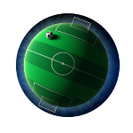
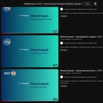
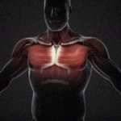

Αρχική
Αναζήτηση
Σύνδεσμοι
Κανονισμοί
Στο Σπίτι
Με Βίντεο
Προγράμματα
Προθέρμανση
Παιχνίδια
Pilates
Πρώτες Βοήθειες
Πρόγραμμα TV
Χρήστος Δούλος
Τάξη
A΄ Δημοτικού
Β΄ Δημοτικού
Γ΄ Δημοτικού
Δ΄ Δημοτικού
Ε΄ Δημοτικού
ΣΤ΄ Δημοτικού
Προγραμματισμός

Πρώτο Τρίμηνο
11 Σεπτεμβρίου - 10 Δεκεμβρίου
Δεύτερο Τρίμηνο
11 Δεκεμβρίου - 10 Μαρτίου
Τρίτο Τρίμηνο
11 Μαρτίου - 15 Ιουνίου
Θέμα
Χοροί ⸬ Στίβος

Μαθαίνουμε ⸬ ΕΡΤ
Τεστ Γνώσεων
Κολύμβηση ⸬ Κουίζ
ΕΥΖΗΝ ⸬ Παλίνδρομο

Ανατομία ⸬ Βίντεο